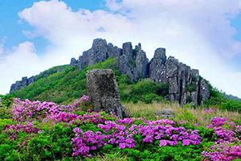
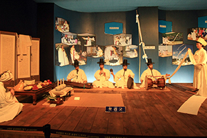
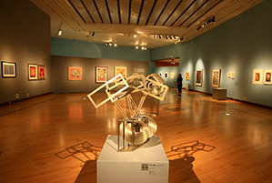
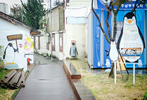
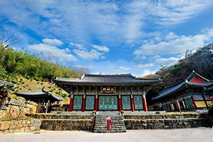
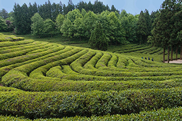

Visit Gwangju
The beauty of Gwangju
Getting tired of urban tour? Do you want to go to the place where you can find old, pastoral Korea on display? Then, going to Gwangju is your best choice. Located in South west in South Korea, it's frequently overlooked for tourists even if it's the sixth largest city in the country. But, Gwangju has been the center of art in the country over two decades since it hosted Biennale in 1995. It offers several great modern art museums and exhibition. Gwangju has been the center of the democratic movement of Korean modern politics history. The infamous May 18 Massacre in Gwangju is widely considered to have been the birth of the nation's democracy. So, visiting Gwangju provides an opportunity to feel the authentic Korea and observe the democratic development in South Korea. And while it's rapidly catching up the rest of the country when it comes to adopting the western cultures, it still preserves the old, traditional cultures. From the annual kimchi festival to the well preserved temples which were built more than a thousand years ago, Gwangju gives you the benefit of seeing authentic Korea.
The May 18th Democratisation Movement ended almost as quickly as it began - in a mere couple of days. Its significance in history, however, lasts till this day. Its inscription as part of the UNESCO Memory of the World, the extent of the memorial park, and the many thought-provoking statues lie as a reminder of the difficulties faced in their fight against what they perceived as a military dictatorship.
Where to visit
Mudeungsan National Park
Mudeungsan National Park provides a view of Gwangju after invigorating hike. With towering 1,187 meters tall, the rocky outcrops are a sight to behold. Though the park is beautiful all four seasons, the colorful autumn foliage is mesmerizing.
Mudeungsan National Park
Folk Museum
Folk Museum in Gwangju presents historical artifacts that were used in the daily lives of Korean people in the past. Through the displays, visitors can learn about the domestic and agricultural lifestyles, as well as Korea’s cultural beliefs.
For tour information click here
Museum of Art
Gwangju has been the center of modern art in South Korea since it has been hosting international art exhibition called Biennale every two years. Managed by the same people who founded the Gwangju Biennale, this art museum shows up-and-coming Korean artists.
For tour information click here
Penguin Village
Penguin Village has a random collection of oddities and narrow, old-town winding streets inside. Do you want to find electric arts or street art? Then come and check it out. You will find interesting architecture and great coffee shops.
For tour information click here
Jeungsimsa Temple
Jeungsimsa Temple is the representative Buddhist temple in Gwangju. You can also find the cultural heritage here. Originally founded in Silla Dynasty, it was reconstructed after it burned down by Japanese invasion in Joseon Dynasty.
For tour information click here
Boseong Green Tea Field
About an hour driving away from Gwangju, Boseong green tea field is worth a day trip. The rolling hills of lush green tea plantaions are stunning. Also, you'll learn how the tea leaves are process and sample freshly brewed tea.
For tour information click here